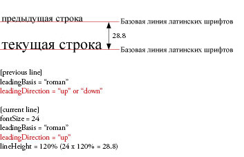
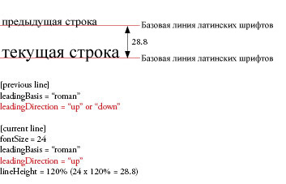
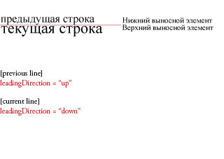
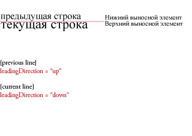

| Пакет | flashx.textLayout.formats |
| Класс | public final class LeadingModel |
| Наследование | LeadingModel |
| Язык версии: | ActionScript 3.0 |
| Версии среды выполнения: | Flash Player 10, AIR 1.5 |
leadingModel класса TextLayoutFormat, составленные из допустимых комбинаций основы межстрочного интервала и направления межстрочного интервала. Основа межстрочного интервала описывает базовые линии, определяющие межстрочный интервал (или свойство lineHeight) для строк в абзаце. Направление межстрочного интервала определяет, относится ли свойство lineHeight к расстоянию от базовой линии строки до базовой линии строки, находящейся перед ней или за ней.
 

 

Связанные элементы API
TextLayoutFormat.lineHeight
flash.text.TextField
flash.text.engine.TextLine
 Скрыть унаследованные общедоступные свойства
Скрыть унаследованные общедоступные свойства Показать унаследованные общедоступные свойства
Показать унаследованные общедоступные свойства
| Константа | Определено | ||
|---|---|---|---|
| APPROXIMATE_TEXT_FIELD : String = "approximateTextField" [статические] Определяет модель интерлиньяжа, которая приближает варианты поведения межстрочного интервала TextField. | LeadingModel | ||
| ASCENT_DESCENT_UP : String = "ascentDescentUp" [статические] Указывает, что основа межстрочного интервала имеет значение ASCENT/DESCENT, а направления межстрочного интервала имеет значение UP. | LeadingModel | ||
| AUTO : String = "auto" [статические] Указывает на автоматический выбор модели межстрочного интервала на основе свойства locale абзаца. | LeadingModel | ||
| BOX : String = "box" [статические] Определяет модель интерлиньяжа, основанную на встроенной модели форматирования CSS, которая включает в себя создание ряда line boxes. | LeadingModel | ||
| IDEOGRAPHIC_CENTER_DOWN : String = "ideographicCenterDown" [статические] Указывает, что основа межстрочного интервала имеет значение IDEOGRAPHIC_CENTER, а направление межстрочного интервала имеет значение DOWN. | LeadingModel | ||
| IDEOGRAPHIC_CENTER_UP : String = "ideographicCenterUp" [статические] Указывает, что основа межстрочного интервала имеет значение IDEOGRAPHIC_CENTER, а направление межстрочного интервала имеет значение UP. | LeadingModel | ||
| IDEOGRAPHIC_TOP_DOWN : String = "ideographicTopDown" [статические] Указывает, что основа межстрочного интервала имеет значение IDEOGRAPHIC_TOP, а направление межстрочного интервала имеет значение DOWN. | LeadingModel | ||
| IDEOGRAPHIC_TOP_UP : String = "ideographicTopUp" [статические] Указывает, что основа межстрочного интервала имеет значение IDEOGRAPHIC_TOP, а направление межстрочного интервала имеет значение UP. | LeadingModel | ||
| ROMAN_UP : String = "romanUp" [статические] Указывает, что основа межстрочного интервала имеет значение ROMAN, а направление межстрочного интервала имеет значение UP. | LeadingModel | ||
APPROXIMATE_TEXT_FIELD | Константа |
public static const APPROXIMATE_TEXT_FIELD:String = "approximateTextField"| Язык версии: | ActionScript 3.0 |
| Версии среды выполнения: | Flash Player 10, AIR 1.5 |
Определяет модель интерлиньяжа, которая приближает варианты поведения межстрочного интервала TextField. Похоже на ASCENT_DESCENT_UP тем, что lineHeight обозначает расстояние базовой линии верхнего выносного элемента строки до базовой линии нижнего выносного элемента предыдущей строки. Тем не менее, положения базовой линии приближают позиции, определенные TextField, вместо использования метрик, предлагаемых TextLine.
ASCENT_DESCENT_UP | Константа |
public static const ASCENT_DESCENT_UP:String = "ascentDescentUp"| Язык версии: | ActionScript 3.0 |
| Версии среды выполнения: | Flash Player 10, AIR 1.5 |
Указывает, что основа межстрочного интервала имеет значение ASCENT/DESCENT, а направления межстрочного интервала имеет значение UP. Другими словами, lineHeight указывает на расстояние между базовой линией верхнего выносного элемента строки и базовой линией нижнего выносного элемента предыдущей строки.
AUTO | Константа |
public static const AUTO:String = "auto"| Язык версии: | ActionScript #IDEOGRAPHIC_TOP_DOWN |
| Версии среды выполнения: | Flash Player 10, AIR 1.5 |
Указывает на автоматический выбор модели межстрочного интервала на основе свойства locale абзаца. Для японского и китайского языка это — IDEOGRAPHIC_TOP_DOWN, а для всех других языков это — ROMAN_UP.
BOX | Константа |
public static const BOX:String = "box"| Язык версии: | ActionScript 3.0 |
| Версии среды выполнения: | Flash Player 10, AIR 1.5 |
Определяет модель интерлиньяжа, основанную на встроенной модели форматирования CSS, которая включает в себя создание ряда line boxes. line box определяется как ограничительная рамка вокруг inline box для всех элементов листа на строке текста, после того как они были выровнены с помощью baselineShift, dominantBaseline, alignmentBaseline и т. д. Для диапазона inline box рассчитывается путем применения равного интерлиньяжа выше и ниже содержимого текста, чтобы его высота равнялась lineHeight. Для встроенных графических элементов lineHeight игнорируется и inline box рассчитывается на основе указанных значений размеров и заполнения. Также в этой модели интерлиньяжа игнорируется firstBaselineOffset.
Дополнительные сведения см. в разделе «Модель интерлиньяжа рамки».
IDEOGRAPHIC_CENTER_DOWN | Константа |
public static const IDEOGRAPHIC_CENTER_DOWN:String = "ideographicCenterDown"| Язык версии: | ActionScript 3.0 |
| Версии среды выполнения: | Flash Player 10, AIR 1.5 |
Указывает, что основа межстрочного интервала имеет значение IDEOGRAPHIC_CENTER, а направление межстрочного интервала имеет значение DOWN. Другими словами, lineHeight указывает на расстояние между идеографической центральной базовой линией строки и идеографической базовой линией следующей строки.
IDEOGRAPHIC_CENTER_UP | Константа |
public static const IDEOGRAPHIC_CENTER_UP:String = "ideographicCenterUp"| Язык версии: | ActionScript 3.0 |
| Версии среды выполнения: | Flash Player 10, AIR 1.5 |
Указывает, что основа межстрочного интервала имеет значение IDEOGRAPHIC_CENTER, а направление межстрочного интервала имеет значение UP. Другими словами, lineHeight указывает на расстояние между идеографической центральной базовой линией строки и идеографической центральной базовой линией предыдущей строки.
IDEOGRAPHIC_TOP_DOWN | Константа |
public static const IDEOGRAPHIC_TOP_DOWN:String = "ideographicTopDown"| Язык версии: | ActionScript 3.0 |
| Версии среды выполнения: | Flash Player 10, AIR 1.5 |
Указывает, что основа межстрочного интервала имеет значение IDEOGRAPHIC_TOP, а направление межстрочного интервала имеет значение DOWN. Другими словами, lineHeight указывает на расстояние между идеографической верхней базовой линией строки и идеографической верхней базовой линией следующей строки.
IDEOGRAPHIC_TOP_UP | Константа |
public static const IDEOGRAPHIC_TOP_UP:String = "ideographicTopUp"| Язык версии: | ActionScript 3.0 |
| Версии среды выполнения: | Flash Player 10, AIR 1.5 |
Указывает, что основа межстрочного интервала имеет значение IDEOGRAPHIC_TOP, а направление межстрочного интервала имеет значение UP. Другими словами, lineHeight указывает на расстояние между идеографической верхней базовой линией строки и идеографической верхней базовой линией предыдущей строки.
ROMAN_UP | Константа |
public static const ROMAN_UP:String = "romanUp"| Язык версии: | ActionScript 3.0 |
| Версии среды выполнения: | Flash Player 10, AIR 1.5 |
Указывает, что основа межстрочного интервала имеет значение ROMAN, а направление межстрочного интервала имеет значение UP. Другими словами, lineHeight указывает на расстояние между латинской базовой линией строки и латинской базовой линией предыдущей строки.
Tue Jun 12 2018, 11:34 AM Z